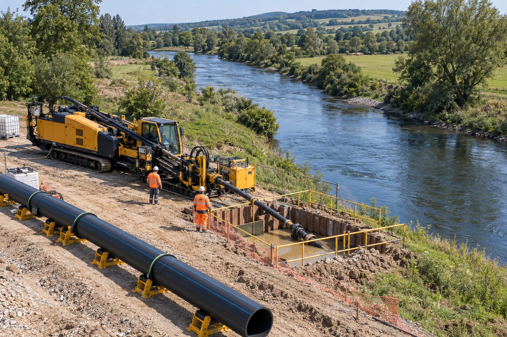

Su yatağı korunur
Yatağa, şev ve kıyı yapısına dokunulmaz.
Hizmetlerimiz · 10

10Dere ve Kanal Altı Geçişleri
Su yapılarının ve çevresinin korunmasına özen gösterilerek dere ve kanal altından yapılan altyapı geçişleri.
Dere, kanal ve sulama yapılarının altından geçişlerde açık kazı; su akışını bozar, yatağı tahrip eder ve mevsimsel kısıtlara takılır. Yönlendirilebilir yatay sondaj ile hat, su yatağının yeterince altından, yatağa dokunmadan geçirilir.
DSİ ve ilgili idarelerin şartları (derinlik, koruma, geçiş noktaları) projeye işlenir; uygulama kuru veya akışlı dönemde, su yapısı etkilenmeden tamamlanır.
Neden Yiba?
Yatağa, şev ve kıyı yapısına dokunulmaz.
Uygulama su akışını etkilemeden yapılır.
Kurum şartnamesine uygun derinlik ve koruma.
Yatak hareketlerinden etkilenmeyen güvenli derinlik.
Sık sorulan sorular
DSİ veya ilgili su idaresinin geçiş izni ve teknik onayı gerekir.
Evet; kazısız yöntemde su yatağına girilmediği için akış varken de uygulama yapılabilir.
Yatak kotu, taşkın ve oyulma riskine göre idarenin belirlediği güvenli derinlikten geçilir.